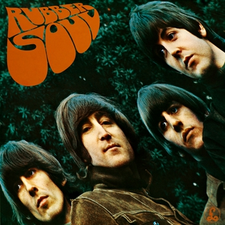

Please, Please Me (1963)El debut de los Beatles plasma lo que venían haciendo en las giras. Y el comienzo ya impacta. Da a conocer la primera fórmula en el armado de las listas de temas (ocho propios y seis covers) y se forja la alianza compositiva más fuerte de la historia del rock: Lennon-McCartney. Se trasluce el apego a las guitarras acústicas y un sonido pastoso que da carácter a las canciones. Desde el vamos los compositores demuestran su condición de "nacidos para hacer hits". Y, aunque algunos covers como "A taste of Honey" o "Boys" son salteables, lo crucial aquí es que se fijan las primeras bases, el manifiesto a la armonía vocal contagiosa, irresistible. Charly García explicaba a RS así el funcionamiento de las voces en el grupo (refiriéndose a "Love Me Do"): "La tercera es la voz del medio, la que define si el acorde es Mayor o es Menor. Y acá cantan un re y un sol, pero se olvidaron del si, o no lo pusieron a propósito para que uno haga la voz ahí, armonizando. Ese es el gancho. ¿Viste que siempre te dan ganas de cantar con los Beatles? A mí me pasaba".
With The Beatles (1963)El segundo disco, como toda la primera etapa, es tan radiable como accesible, amigable. Se destacan la influencia Motown y R&B y las armonías vocales. Están, todavía, muy lejos del nivel de experimentación que vendrá luego. Pero la sencillez es eso: una propuesta inicial y hasta una apariencia. Una puerta de entrada. Con temáticas centradas en el amor o el desamor, o alguna crítica solapada al consumo, por ejemplo (en el cover "Money", de Bradford y Gordy). El detalle encantador para potenciar o desmantelar el antagonismo (¿inexistente?) con los Rolling Stones: el tema "I Wanna Be Your Man", cantado por Ringo, fue cedido a Jagger & Cía por invitación de su manager, Andrew Loog Oldham. "No íbamos a darles nada muy bueno, ¿no?", resumieron Lennon y McCartney a la hora de hacer el pase de manos.

A Hard Days Night (1964)"Lo que para el resto de los mortales hubiera sido la culminación de una carrera musical, es decir, colocar dos álbumes seguidos en el número 1, para los Beatles fue un simple aperitivo". Así resume el crítico Bruno MacDonald el lanzamiento del tercer largo del grupo, esta vez íntegramente compuesto por Lennon-McCartney: todo un acto de valentía y de independencia salir con las composiciones propias, algo que solo artistas como Buddy Holly habían hecho hasta entonces. Este mero gesto, la lección de pop de guitarras, el acompañamiento fiel a la película homónima y el acorde inicial del disco (Harrison y la Rickenbacker de doce cuerdas) justifican a este disco entre los mejores cinco.

Beatles For Sale (1964)Se empieza a sentir la influencia de Bob Dylan y se podría decir que este cuarto disco inaugura la etapa con mayor impronta country y folk (que sigue con Help! y alcanza a Rubber Soul). Están literalmente en venta, y se dan cuenta. Y esa asimilación es, desde el título, una vuelta de tuerca. Empiezan a oscurecerse, y la honestidad es clave aquí. "I´m a Loser" descubre que detrás de la máscara del éxito pueden sentirse perdedores. El claroscuro oscilante del álbum lo vuelve atractivo: hay un perdedor, como dijimos, hay alguien vestido de negro-duelo ("Baby´s in Black") pero, a la vez, se sigue la luz del sol ("I`ll Follow the Sun"). Una perla, quizás subvaluada es "Every Little Thing", que está cantada por Lennon pero fue escrita por McCartney. Como Sostiene Ian MacDonald en el impresionante análisis de las canciones de The Beatles (Revolución en la mente), estamos frente a uno de los temas más emocionantes del álbum, que crea "una potente carga a partir de un material armónicamente simple".
Help! (1965)Aunque el primer grito del disco transmite la urgencia en el mensaje del grupo, y es genuino ese llamado ("Help!"), el cansancio se trasluce en el resultado general. Por supuesto, siempre puede haber temas-maravilla. Y temas-bochorno. Y algunas de estas clasificaciones discrepan entre lo que piensan sus propios autores y lo que opinan sus oyentes. Por caso, "It´s Only Love" es uno de los temas de Lennon más repudiados por él y, acaso, más transparentes en su vulnerabilidad lírica (y musical). Un plus es la participación de George Harrison, que se las va ingeniando cada vez más para colar sus composiciones, en este caso, "I Need You". Estamos nuevamente frente a un proyecto cinematográfico del cuarteto, una película disparatada pero no psicodélica (a mitad de camino), al igual que sus temáticas que siguen atadas al amor y desamor y todavía no profundizan en lo que vendrá: la angustia existencial, el experimento, la desazón cotidiana y la genialidad.

Rubber Soul (1965)Algunos críticos sostienen que éste es el resultado de dos influencias cruciales: las drogas (se trata del inicio oficial de sus incursiones psicodélicas) y Bob Dylan (que ya venía influenciando su producción anterior). Es cierto, sí, y se plasma en la portada lisérgica que ni siquiera los nombra, en el relato de situaciones personales en clave profunda y en un existencialismo (sellado por Lennon), que habla a un hombre de ningún lado ("Nowhere Man"). Por supuesto, las armonías vocales siguen rigiendo, como en el líricamente perturbador y bello "Girl". Hay innovaciones, porque ya el grupo tiene su estudio propio, y prueban con el sitar, o con un bajo distorsionado ("Think for Yourself"). Es la muestra de una primera libertad: ellos tuvieron el control absoluto de todo. Y se nota la homogeneidad.
Revolver (1966)Se entra al állbum por esa extrañada y disruptiva portada, tan descolocante como el nombre: Revolver. Si muchos sostienen que es aquí donde se empezaron a traslucir de manera inevitable las individualidades, pues bienvenido sea ese paso. Aunque se haya terminado con el sueño de la composición a cuatro manos. Esta sucesión de temas magistrales abre oficialmente la temporada de psicodelia, que influyó en la escena internacional, de los Beach Boys a los Rolling Stones, de continente a continente. Sólo para nombrar algunos de los temas clave y que se entienda el primer lugar en el podio, están aquí "Tomorrow Never Knows", "And Your Bird Can Sing", "I Want to Tell You", "I´m Only Sleeping" y "Eleanor Rigby". Así, volviendo a la definición inicial, podemos pensar en el gran legado que dejó el grupo: esos destellos de belleza que han sido captados, una vez más.

Sgt. Peppers Lonely Hearts Club Band (1967)Doble o nada a los Beach Boys (y pensar que se sigue insistiendo en el antagonismo con los Stones, cuando la más fructífera competencia la ofrecieron los estadounidenses). Conceptual por definición, la idea de Paul fue crear una banda como doble, como una suerte de dopelgänger de sus propias figuras. Y así se vislumbra en la famosa portada, en el inicio y en el casi final del disco ("Reprise"). Una banda de corazones solitarios como club, liderado por un sargento llamado Pimienta. Venían separándose hace rato las composiciones firmadas Lennon-McCartney. Pero "A Day in the Life" muestra la mejor fusión de dos temas pergeniados de una manera diversa pero puestos en la misma pista. Atravesado por los diarios y por afiches populares ("Being For the Benefit of Mr. Kite!"), la coherencia inicial se propaga hasta el final.

Magical Mystery Tour (1967)Si bien no es un largo concebido como tal en un sentido estricto, porque junta el EP británico que corresponde a la película con los singles del año, incluye temas maravillosos como "Strawberry Fields Forever", "Penny Lane", "All You Need is Love". Y esto alcanza para revalorizarlo. Las inclusiones específicas también son destacables, y fomentan un principio de cohesión menos evidente que en Sgt. Pepper pero con un resultado notable, de cualquier forma, con "Your Mother Should Know", "I Am the Walrus", "The Fool on the Hill" y "Magical Mystery Tour" a la cabeza.

Álbum Blanco (1968)El único álbum doble de los Beatles nos muestra: la fertilidad compositiva, la inflexibilidad en dejar afuera temas de cada uno (sobre todo de la dupla, que firma en conjunto hasta el final pero que compone por separado) y la antítesis de una cohesión previa, premeditada y conceptual, plasmada en Sgt. Pepper. Sin embargo, el cancionero funciona. Y cómo. No hay fisuras. Y, si las hubo, a la luz del tiempo se pueden rescatar como piezas importantes del engranaje de la experimentación ("Revolution 9"). Las temáticas, los arreglos, la mixtura: todo esto hace del disco una obra sólida. Con referencias a la Unión Soviética (y parodia a los Beach Boys: "Back in the USSR"), ironía sobre la portación de armas (acaso el mejor de los temas, "Happiness is a Warm Gun)", homenaje a la madre de Lennon y a Yoko ("Julia"), homenaje a la perra de Paul ("Martha My Dear"), críticas al Maharishi ("Sexy Sadie"). El lema sería: no sólo lo conceptual es bueno.
Yellow Submarine (1969)Entre los últimos del ranking están principalmente algunos de los que funcionaron como bandas de sonido de sus películas, tal y como se editaron originalmente. Ediciones posteriores, en casos como éste, recuperaron los sencillos desplegados en la película. Y esto les dio un nuevo sentido y una nueva puesta en valor. Lo cierto es que aquí tenemos un lado A con seis temas de la banda (dos de ellos ya editados en formato de simple) y un lado B con música orquestal grabada por el productor George Martin. El trabajo de Martin merece un rescate crítico pero en términos de obra completa parecen dos discos separados.

Abbey Road (1969)El último álbum grabado por el grupo, aunque el penúltimo en editarse. El tema final del medley ubicado originalmente en el lado B se llama "The End" y lo resume todo: "Y en el final, el amor que te llevás es igual al amor que diste". Aunque haya, luego, un track escondido a modo de parodia y auto-parodia ("Her Majesty"). Precisamente ese popurrí de 16 minutos y 8 canciones unidas constituye la parte inolvidable del disco, además de los temas de Harrison, "Something" y "Here Comes the Sun", que junto a "While My Guitar Gently Weeps" (Album Blanco) conforman sus tres mejores composiciones de la era Beatle. "Come Together", que da comienzo al álbum, refiere a un título político-sexual. Como señala Ian MacDonald, se trata de la última adhesión de Lennon a la contracultura estando todavía en el grupo. Más allá de esto, el efecto que genera es contundente: nos convoca e invoca, aunque éste sea el final de su historia en conjunto. Se trata de "la canción clave del cambio de década".